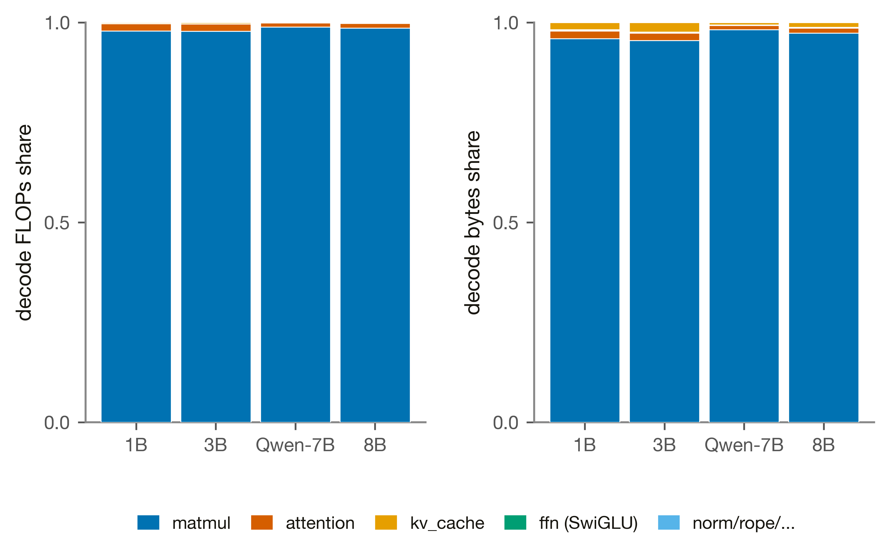
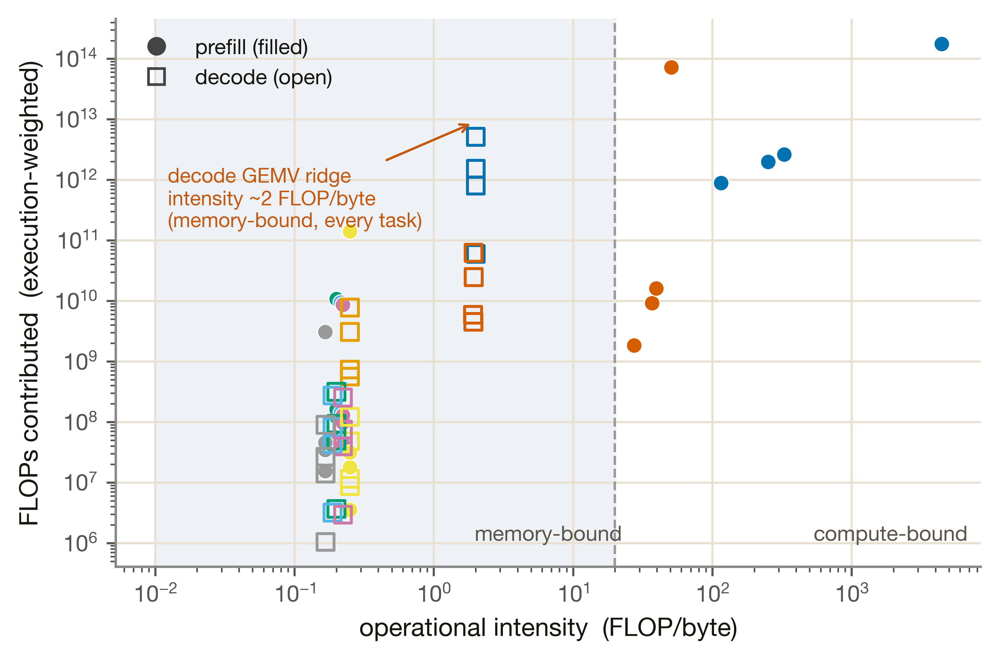
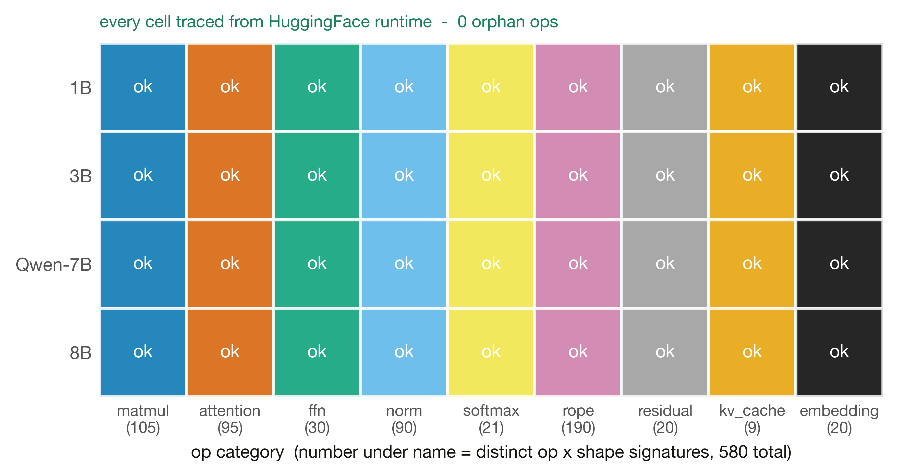

Workload — op 清單與 trace
M5 是模擬器的「劇本產生器」——把 HuggingFace 模型 + workload 定義，確定性地導成每個 token 實際執行的 op×shape DAG（prefill / decode 分開）。這條 trace 就是其他單元要算的工作量。本頁也整合了原 Phase 0.2 的 op 清單與 roofline：580 個 op×shape 簽名、9 類，跨 4 個模型、孤兒 op 數為 0。
M5 的基本功能只有一個：確定性地產生每 token 的 op-DAG trace——也就是整個模擬器要算的「工作量」本身。它不算延遲、不排程、不競爭資源；它定義「要算哪些 op、什麼形狀、各執行幾次」，再交給 M1/M2/M4 去算成本、M6 去排程。
量測 = op 清單 + op profile。① op 清單（inventory）：用 PyTorch runtime tracer 從真模型抽出 580 個 distinct (op, in_shapes, out_shape) 簽名、歸成 9 類（matmul / attention / ffn / norm / softmax / rope / residual / kv_cache / embedding）。② op profile：對每個 (model × task)，算每個簽名執行幾次、FLOPs / bytes / operational intensity——這就是 roofline 的預測側輸入，也是把 per-op 板上延遲組成端到端成本的權重。
M5 是確定性的量測 / 覆蓋單元，不是擬合單元——所以誠實標籤上只有 calibrated 亮著（op trace 取自真實 PyTorch runtime tracer，覆蓋率經驗證、0 孤兒），其餘 fitted / simulated / assumption / borrowed 全部熄滅。這在本報告裡是少見的「幾乎全暗」，但對 M5 而言這才誠實：它是一個確定性的 op 抽取器，沒有任何擬合或外推的數字。
量測協定：在 dev 機（Apple M3 Pro / CPU，無板、無 GPU、無真權重）用 TorchDispatchMode + meta/FakeTensor 抽 op 圖（強制 eager attention，ADR-0007），把語意 op 對到 aten primitive。四個模型 eager 展開後落在同一組約 38 個 aten primitive（Qwen2.5 的 QKV 有 bias、用 addmm 而非 mm，多 1 個 op，是唯一 op-set 差異）。
1a · op 清單（inventory）：580 個 op×shape 簽名、9 類
去重後得到 580 個 distinct (op, in_shapes, out_shape) 簽名，依語意來源歸類：名稱不歧義的直接歸（mm/addmm→matmul、softmax→softmax…），歧義的 overloaded op（bmm/add/mul/cat）依 tracer 記下的 src 發出模組歸（issue #5；KV-cache 的 cat 獨立切成 kv_cache 記憶體搬移類、不計入 attention 計算，#6）。下圖 §4 的覆蓋格各格下方的數字就是該類的簽名數。
1b · op profile：每類的 FLOPs / bytes / intensity 組成
對每個 (model × task)，每個簽名執行幾次直接取自 inventory 的 count（已聚合 collided 簽名，例如 Llama 的 q≡o、k≡v、gate≡up 各 = 2×layers），不自行 ×layers 推算。FLOPs：matmul/bmm = 2·M·K·N；bytes = (輸入+權重+輸出 元素數) × dtype（GEMM 運算元 INT8，非-GEMM FP16）。下圖把 4 個模型 decode 的 op 類組成攤開：

M5 不擬合任何延遲；它只從形狀算出每個 op 的 operational intensity = FLOPs / bytes，這是 roofline 的預測側輸入（真實的 roofline knee 由 Phase 0.3 / Phase 1 的板上量測決定，這裡只給座標）。一個結構性的事實：
decode 一律 memory-bound、prefill 隨長度變 compute-bound。decode 每步是 M=1 的 GEMV，intensity 對每個模型、每個任務都恰是 ~2 FLOP/byte（每讀一個權重 byte 只做約一次 MAC）——正是 CIM weight-residency 最有用的 memory-bound regime。prefill 的 matmul intensity 則隨 prefill 長度單調上升（短任務數百、LongBench 長文本數千），越長越 compute-bound；下圖把這條 prefill→decode 的 intensity 塌縮畫成 roofline。

M5 是生成式單元，不掛任何 heavy-sim 引擎——它的「模擬」就是trace 生成本身的確定性。誠實地講：本頁沒有「重型模擬」可秀，這一節秀的是「為什麼這條 trace 可重現、可信」。
| 性質 | 怎麼保證 |
|---|---|
| count 不靠手算 | 每個簽名執行次數直接取自 inventory 的 count（已聚合 collided 簽名），從不手寫「× layers」 |
| off-grid 長度可重現 | 各簽名的長度維由兩個 collision-free anchor（prefill 256/1024、decode 512/1024）diff 出 value = a·L + b 的整數模板；count 與長度無關、由 inventory 帶過去 |
| 模板自我驗證 | 用 anchor 建的模板必須逐簽名、逐 count 重現 held-out inventory 點（prefill {128,512}、decode {128}），四個模型全過；任何不符 op_profile.py 拒絕輸出 |
| real-weights 交叉驗證 | 1B 用真權重在 CPU 跑出的語意 op set，與 meta/FakeTensor trace 一致（housekeeping 差異忽略） |
M5 的 gate 不是數值誤差，而是覆蓋正確性：重用 Phase 0.1 的 inventory oracle 做 expected_ops_check（每個語意 op 的 primitive 都在），再做 0-orphan 檢查（每個 op_profile 用到的 op，都能回溯到從 HF 抽出的 inventory）。四個模型全過：

| 模型 | distinct op | tasks | 孤兒 op | 語意覆蓋 | 結果 |
|---|---|---|---|---|---|
| llama-3.2-1b | 38 | 4 | 0 | 全覆蓋 | ✅ PASS |
| llama-3.2-3b | 38 | 4 | 0 | 全覆蓋 | ✅ PASS |
| llama-3.1-8b | 38 | 4 | 0 | 全覆蓋 | ✅ PASS |
| qwen2.5-7b | 39 | 4 | 0 | 全覆蓋 | ✅ PASS |
| 總計 | — | — | 0 | — | ✅ pass_all=true |
四個目標模型語意全覆蓋、孤兒 op 數合計 0、pass_all = true。Qwen2.5 比 Llama 多 1 個 distinct op（QKV bias 用 addmm），覆蓋格仍全綠。注意 distinct aten op（~38）與 §1 的 580 個 op×shape 簽名是兩個尺度：前者是 op 種類數，後者是「op × 形狀」去重後的微基準清單。
| 項目 | 狀態 |
|---|---|
| op×shape 覆蓋（4 模型 × 9 類，0 孤兒） | ✅ 凍結，calibrated |
| op profile（FLOPs/bytes/intensity）= roofline 預測側 | ✅ 凍結，餵 M1/M2/M4 成本 |
| op DAG trace = M6 排程器輸入 | ✅ 就緒，Phase 2 按需展開 |
| decode 動態長度逐 token 展開正確性 | ⚠ Phase 2 才完整行使（M5 按需生成時） |
| 長文本 prefill 的 attention/KV bytes（O(S²)） | ⚠ 接 M2 KV watch-item（板子恢復後校準） |
| embedding gather（decode≈0 / prefill≈192 MB analytic） | ⚠ 未獨立驗證 |
無 blocking gap：op trace 覆蓋穩定、可重現，traces 直接餵 M5→Phase 2 按需展開——Phase 2 的工作是把這條 trace 展成逐 token 串流，而非重新驗證覆蓋。M5 是模擬器的「劇本」，其他單元才是「演員」；劇本已確定性產生並覆蓋驗證，Phase 2 上場即用。
- 覆蓋 gate：
validation/reports/phase1.1/m5.json › per_model（n_distinct_ops, orphan_ops, semantic_covered）, pass_all - op 清單 / 580 簽名 + 9 類 counts：
measurements/op_inventory/sweep_matrix.json › total, counts - per-model inventory + expected_ops_check：
measurements/op_inventory/{llama-3.2-1b,llama-3.2-3b,llama-3.1-8b,qwen2.5-7b}.json - op profile（FLOPs/bytes/intensity，per model×task）：
measurements/op_profile/<model>_<task>.json › totals, rows - workload 長度（mean prefill/decode）：
measurements/op_inventory/workload_lengths.json - trace 生成 / 模板 + oracle 自我驗證：
tools/trace_export/op_profile.py、tools/trace_export/op_inventory.py、expected_ops.py、realweight_check.py - 方法與 caveat（issue #5/#6/#10、ADR-0002/0007）：
docs/phase0-op-inventory.md、docs/phase0.2-op-profile-findings.md